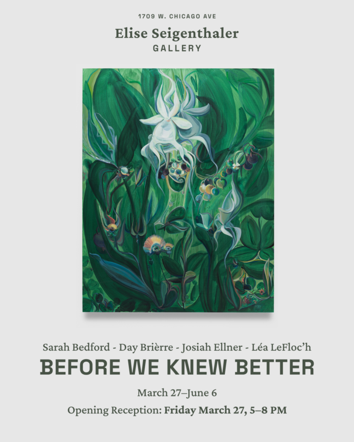

Before We Knew Better
Elise Seigenthaler Gallery is pleased to present Before We Knew Better, a group exhibition featuring Sarah Bedford, Day Brièrre, Josiah Ellner, and Léa LeFloc’h, whose practices draw on narrative, folklore, and personal mythology to explore our enduring relationship with the natural world. Across painting, ceramics, and works on paper, Before We Knew Better gathers works that feel at once intimate and mythical, suspended at the intersection of memory, imagination, and observation.
Before knowledge becomes fixed and ingrained, the world is encountered through instinct and emotion, narrative and storytelling. The works in Before We Knew Better echo this sensibility, evoking a time when the boundary between the real and the imagined was more diaphanous and permeable. Throughout the exhibition, flora, fauna, and landscapes are depicted across varied materials. Simplified forms, vibrant color palettes, and illustrative gestures imbue the works with a tone that feels both immediate and out-of-time. A close-cropped painting of a unicorn’s milky eye, ringed with fur, reflects a shooting star passing through the luminous sky. Insects and birds adorn intricately patterned vessels. Winding golden roads meander through softly-rendered mountains.
Rather than depicting nature as a fixed or distant subject, the artists approach it as a living presence shaped by memory, experience, and intuition. Their works suggest environments where traces of human life appear alongside vast or mysterious forces: secret gardens, shifting terrains, and intimate moments of quiet grandeur that seem to exist just beyond the veil of ordinary perception.
As the gallery’s second exhibition, Before We Knew Better continues Elise Seigenthaler Gallery’s interest in work that feels imaginative, and open-ended. The exhibition invites viewers into a space where imagined worlds that feel at once ancient and visionary.